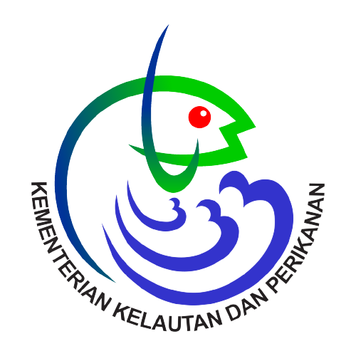

PT. Imam Putra Mandiri
- Bagian : Staff Administrasi
- Alamat : Bojonegara, Kab. Serang Banten
- Mulai Kerja : Juni 2020
- Sampai : April 2022
Job desk
Keahlian

Sakina Fried Chicken
- Bagian : Waiters & Cook
- Alamat : Serang, Kota Serang Banten
- Mulai Kerja : Juli 2019
- Sampai : Oktober 2019
Job desk
Keahlian

Resto Jhon Chicken & Burger
- Bagian : Waiters & Cook
- Alamat : Serang, Kota Serang Banten
- Mulai Kerja : Juni 2018
- Sampai : Maret 2019
Job desk
Keahlian

Dinas Kelautan dan Perikanan Prov. Banten
- Bagian : Praktek Kerja Industri (Prakerin)
- Alamat : Curug, Kota Serang Banten
- Mulai Kerja : Desember 2016
- Sampai : Februari 2017
Job desk
Keahlian